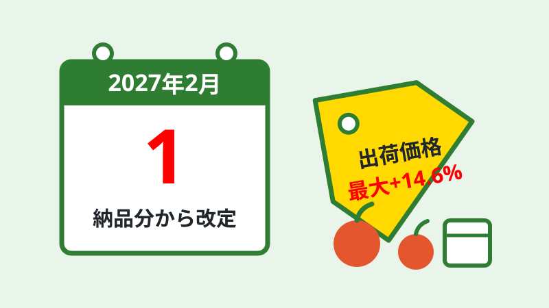

カゴメの値上げは2027年2月1日から｜対象は家庭用147品目、トマトジュースとケチャップの確認ポイント


「カゴメのトマトジュースやケチャップが値上げされるらしいけれど、いつから・何が対象なの？」という疑問に、カゴメの公式発表（2026年11月24日）に基づいて答えます。個別商品ごとの値上げ幅は公表されていないため、この記事では公式に確認できる範囲だけを整理します。
・いつから：2027年2月1日（月）の、カゴメからの納品分から
・対象：家庭用147品目（食品58品目＋飲料89品目）と、業務用262品目の、合計409品目
・改定幅：家庭用は食品が出荷価格で最大13.1％、飲料が最大14.6％の値上げ（業務用は食品で最大40.2％）
・注意：改定されるのはメーカーの「出荷価格」で、個別商品ごとの改定率は公表されていません
目次
1. 公式発表の内容／2. 対象カテゴリの内訳／3. トマトジュースはいつから対象か／4. ケチャップ・パスタソースは対象か／5. 値上げ前に確認したい対象品目／6. 家計への影響の試算／7. 対象カテゴリの商品（楽天市場）／8. よくある質問／9. まとめ
カゴメトマトジュース食塩無添加 200ml×24本を楽天市場で見る
公式発表の内容｜出荷価格の改定は2027年2月1日納品分から
カゴメ株式会社は2026年11月24日、ニュースリリース「家庭用・業務用 一部商品の出荷価格の改定について」で、家庭用および業務用の一部商品の出荷価格を改定すると発表しました。改定時期は「2027年2月1日（月）当社からの納品分より」です。
値上げの理由として公式発表が挙げているのは、主要原材料である農産物をはじめ、容器包材費、物流費、エネルギー費などの上昇が続いていることです。「企業努力だけで上昇したコストの低減を図るのは極めて困難な状況」としています。

判定：ここで改定されるのは、メーカーから卸・小売への「出荷価格」です。スーパーやネット通販の店頭価格は各店が決めるため、2月1日に一斉に同じ幅で値札が変わる、という話ではありません。
| 区分 | 品目数 | 対象カテゴリ（公式発表の記載） | 出荷価格の改定幅 |
|---|---|---|---|
| 家庭用・食品 | 58品目 | トマトケチャップ・トマト調味料類・ソース・パスタソース 等 | 最大13.1％値上げ |
| 家庭用・飲料 | 89品目 | トマトジュース・野菜飲料・果汁飲料 等 | 最大14.6％値上げ |
| 業務用・食品 | 232品目 | トマトケチャップ・トマト調味料類・ソース・冷凍固形野菜 等 | 最大40.2％値上げ |
| 業務用・飲料 | 30品目 | トマトジュース・野菜飲料・果汁飲料 等 | 最大13.6％値上げ |
| 対象カテゴリの販売ページ：トマトジュース24本を楽天市場で見る／野菜一日これ一本24本を楽天市場で見る／トマトケチャップを楽天市場で見る | |||
出典：カゴメ株式会社 ニュースリリース「家庭用・業務用 一部商品の出荷価格の改定について」（2026年11月24日）。合計409品目は当編集部の合算ではなく公式発表の記載です。
カゴメ 野菜一日これ一本 200ml×24本を楽天市場で見る
対象カテゴリの内訳｜家庭用は147品目、全体の6割弱は業務用
409品目の内訳を円グラフにすると、業務用・食品が232品目（56.7％）と半分以上を占めます。家庭の買い物に直接関係するのは、家庭用の147品目（食品58＋飲料89）です。
改定対象409品目の内訳
業務用・食品 232品目（56.7%）
家庭用・飲料 89品目（21.8%）
家庭用・食品 58品目（14.2%）
業務用・飲料 30品目（7.3%）
業務用は飲食店・給食向けの商品で、家庭の買い物には直接かかわりません。この記事では家庭用の2区分を中心に確認します。
トマトジュースはいつから対象か｜家庭用・飲料89品目に含まれる
「カゴメ トマトジュース 値上げ いつから」という疑問への答えは、2027年2月1日の納品分からです。トマトジュースは家庭用・飲料89品目の対象カテゴリに明記されており、同じ区分には野菜飲料・果汁飲料も含まれます。改定幅は出荷価格で最大14.6％です。
ただし、どの商品が何％上がるかは公表されていません。また、店頭価格への反映は、店の在庫の入れ替わりによって前後します。2月1日より前に並んだ在庫は旧価格のまま売られる場合もあれば、店によって切り替え時期が異なる場合もあります。
野菜一日これ一本や野菜生活100のような野菜飲料も、「野菜飲料」のカテゴリとして対象に含まれます。普段ケースで買っている方は、次の節の確認ポイントを見てください。
ケチャップ・パスタソースは対象か｜家庭用・食品58品目に含まれる
トマトケチャップは、家庭用・食品58品目の対象カテゴリの筆頭に挙げられています。同じ区分には、トマト調味料類・ソース・パスタソースも含まれます。改定幅は出荷価格で最大13.1％です。
ケチャップは開封前なら常温で日持ちする調味料です（カゴメトマトケチャップ500gは、販売ページの商品スペックで賞味期限が製造から545日と表示されています）。「ケチャップ 値上げ 買い置き」と考える場合は、まず今のストックの賞味期限と、普段の使用ペースを確認するのが先です。使い切れる範囲を超えた買い置きは、結局無駄になりやすくなります。

判定：食品・飲料とも、対象は「カテゴリ」で公表され、個別商品の改定率は非公表です。特定の商品名で「○％上がる」と断定している情報があったら、公式発表にはない数字だと考えてください。
カゴメトマトジュース食塩無添加 200ml×24本を楽天市場で見る
値上げ前に確認したい対象品目｜カテゴリ・賞味期限・置き場所の3点
買い方を変える前に、事実として確認できるのは次の3点です。あわてて買い込む必要はなく、普段買うものが対象かどうかを確かめるための確認です。
1. 普段買うものが対象カテゴリか
家庭用の対象は、食品＝トマトケチャップ・トマト調味料類・ソース・パスタソース等、飲料＝トマトジュース・野菜飲料・果汁飲料等です。自宅のストックと買い物リストを、このカテゴリと照らして確認します。
2. 賞味期限の範囲で使い切れるか
紙パック飲料（200ml）は常温保存でき、賞味期限は製造から数か月単位です。ケチャップや缶入りのトマトソースも常温で日持ちします。買い置きをする場合でも、賞味期限内に普段のペースで使い切れる量が上限です。
3. 一人暮らしの置き場所に入るか
飲料のケース買い（200ml×24本）は1箱で約5.4kgあり、戸棚や床の置き場所を取ります。一人暮らしでは、ケースを積む場所があるか、飲み切るまでにかかる期間（1日1本なら24日）も合わせて確認してください。
カゴメ 野菜一日これ一本 200ml×24本を楽天市場で見る
家計への影響の試算｜最大率で当てはめた「上限」の計算
個別商品の改定率は公表されていないため、ここでは公式の最大率をそのまま当てはめた上限の試算だけを示します。実際の店頭価格の上がり幅は、これより小さくなるのが通常です（出荷価格ベースの計算である点にも注意してください）。
トマトジュース・野菜飲料を月3,000円分買う場合：3,000円 × 14.6％ ＝ 月438円が上限の上乗せ（年換算で最大5,256円）
ケチャップ・ソース・パスタソースを月1,000円分買う場合：1,000円 × 13.1％ ＝ 月131円が上限の上乗せ
→ 1本・1個あたりの差は小さいため、買い置きで得られる差も「普段使う分」の範囲では限られます。計算の前提は「全て最大率で上がった場合」で、実額は店頭で確認するのが確実です。
試算はあくまで上限の目安です。「最大14.6％」は89品目の中の最も大きい改定幅で、全商品の平均ではありません。
対象カテゴリの商品｜楽天市場で確認できた候補
対象カテゴリについて、2026年11月28日に楽天市場で取り扱いを確認できた代表的な商品を紹介します。価格・在庫は変動するため、注文前に各販売ページで確認してください。
対象カテゴリの商品｜カゴメトマトジュース食塩無添加 200ml×24本
2,750円（送料無料）／約115円/本
家庭用・飲料の対象カテゴリ「トマトジュース」の代表商品。紙パック200ml×24本のケースで、常温保存できます。機能性表示食品（リコピン・GABA）として届け出されている商品です。
確認ポイント：1日1本なら24日分。賞味期限と置き場所（1箱約5.4kg）を先に確認してください。

販売：食のこだわり総本舗 食彩館／価格は2026年11月28日時点の楽天市場の表示です。在庫・送料は注文前に販売ページで確認してください
対象カテゴリの商品｜カゴメ 野菜一日これ一本 200ml×24本
2,592円（送料は一部地域を除き無料。北海道・沖縄+850円／東北+150円）／108円/本
家庭用・飲料の対象カテゴリ「野菜飲料」の代表商品。30品目の野菜350g分を使った野菜汁100％の紙パック飲料で、200ml×24本のケースです。
確認ポイント：トマトジュースと同じく、飲み切るペースと賞味期限の照合が先です。

販売：FELICITY Beer&Water／価格は2026年11月28日時点の楽天市場の表示です。在庫・送料は注文前に販売ページで確認してください
対象カテゴリの商品｜カゴメ トマトケチャップ 500g
800円（送料無料）
家庭用・食品の対象カテゴリ「トマトケチャップ」の代表商品。賞味期限は製造から545日と公表されており、開封前は常温で保管できます。
確認ポイント：今あるストックの賞味期限を見てから、買い足すかどうかを決めてください。

販売：便利生活 マイルーム／価格は2026年11月28日時点の楽天市場の表示です。在庫・送料は注文前に販売ページで確認してください
対象カテゴリの商品｜カゴメ 基本のトマトソース 295g
267円（送料760円／関東・山梨は980円以上、その他の地域は1,980円以上の注文で送料無料）
家庭用・食品の対象カテゴリ「パスタソース・トマト調味料類」にあたる、缶入りのトマトソース。炒め玉ねぎとトマトを煮込んだ、下ごしらえ済みのソースです。
確認ポイント：缶入りで常温保存できます。使う頻度が低い家庭では、少量パックの方が無駄になりにくくなります。

販売：楽天24エクスプレス／価格は2026年11月28日時点の楽天市場の表示です。在庫・送料は注文前に販売ページで確認してください
よくある質問
- Q. カゴメの値上げはいつからですか？
- 2027年2月1日（月）の、カゴメからの納品分からです。店頭価格が変わる時期は、店の在庫の入れ替わりで前後します。
- Q. トマトジュースは対象ですか？
- はい。トマトジュースは家庭用・飲料89品目の対象カテゴリに明記されています。野菜飲料・果汁飲料も同じ区分です。改定幅は出荷価格で最大14.6％です。
- Q. ケチャップは対象ですか？買い置きした方がいいですか？
- トマトケチャップは家庭用・食品58品目の対象カテゴリに含まれます（出荷価格で最大13.1％）。買い置きについては、賞味期限（500gで製造から545日）と普段の使用ペースを確認し、使い切れる範囲にとどめるのが無駄のない考え方です。
- Q. 全商品が最大率（13.1％・14.6％）で上がるのですか？
- いいえ。「最大」は対象品目の中の最も大きい改定幅です。個別商品ごとの改定率は公表されていないため、自分の買う商品が何％上がるかは、店頭の価格が変わった時点で確認することになります。
- Q. 業務用の値上げは家庭に関係しますか？
- 業務用（食品232品目・飲料30品目）は飲食店・給食向けの商品で、家庭の買い物には直接関係しません。外食価格などへの影響は、この発表だけでは分かりません。
カゴメトマトジュース食塩無添加 200ml×24本を楽天市場で見る
まとめ｜確認できるのは「時期・カテゴリ・最大率」の3つ
- 時期：2027年2月1日（月）の納品分から
- 対象：家庭用147品目（食品58＝ケチャップ・ソース・パスタソース等／飲料89＝トマトジュース・野菜飲料・果汁飲料等）＋業務用262品目
- 改定幅：家庭用は出荷価格で食品最大13.1％・飲料最大14.6％。個別商品の率は非公表
- 買い方：普段買うものが対象カテゴリか、賞味期限内に使い切れるか、置き場所があるか、の3点を確認する

判定のまとめ：公式発表で確定しているのは時期・対象カテゴリ・最大率までです。それ以上の数字は推測になるため、この記事では試算を「上限」と明記して分けました。最新の情報はカゴメの公式発表で確認してください。
出典：カゴメ株式会社 ニュースリリース「家庭用・業務用 一部商品の出荷価格の改定について」（2026年11月24日、https://www.kagome.co.jp/library/company/news/2026/img/2026112401.pdf ）／カゴメトマトケチャップ500gの賞味期限はヨドバシ.comの商品スペック表示（製造から545日）に基づく。確認日：2026年11月28日。価格・在庫は変動します。
カゴメ 野菜一日これ一本 200ml×24本を楽天市場で見る
※このページにはアフィリエイト広告が含まれます（楽天アフィリエイト）。価格・条件は各販売ページと各社の公式発表で確認してください。